Module 4 · 2105603 Advanced Chemical Engineering Thermodynamics
9 August 2026
A parameter set is not a result.
A result is a parameter set
plus a statement of where it may be used.
Introduction
Four descriptions of the same equilibrium, the behaviour they produce, then the full working cycle: data, consistency, regression, a stated domain of validity — and the route back into the equation of state. F4.22, the last figure of the module, is that whole structure as one decision map.
The chain of reasoning
An equation of state gives P-V-T behaviour → equilibrium is governed by chemical potential → fugacity gives chemical potential a usable form → equality of fugacity predicts phase equilibrium.
Module 4 is where that chain meets measurement — and, in Section 4.7, where it returns to the equation of state it started from.
Seven questions
PART I
Section 4.1 Raoult, modified Raoult, gamma-phi, phi-phi
Each rung adds physics the rung below omitted, and each addition costs something.
4.1 · Four descriptions of the same equilibrium
State the two assumptions separately, because they fail separately.
y_i P = x_i P_i^{\rm sat}
Assumption 1 — ideal liquid
Every molecule sees the same environment whatever the composition. True only when the two species are chemically almost identical: benzene and toluene, hexane and heptane.
Assumption 2 — ideal vapour
\hat\varphi_i = 1. Fails at high pressure, and also at low pressure when the vapour associates. Acetic acid dimerises in the vapour at one atmosphere.
What it costs
Nothing but P_i^{\rm sat}(T). No binary parameter, no data, no fitting. That is why it survives as the first estimate.
4.1 · Four descriptions of the same equilibrium
Liquid non-ideality admitted; the vapour still treated as an ideal gas.
y_i P = x_i \gamma_i P_i^{\rm sat}
Physical meaning
\gamma_i measures how much the liquid environment differs from the pure liquid. It is a property of the mixture, derived from an excess Gibbs energy, and it carries the reference state with it — Lewis-Randall here, so \gamma_i \to 1 as x_i \to 1.
Engineering implication
This is the description behind almost every distillation column ever designed at moderate pressure. Two fitted parameters per binary pair, from binary VLE data. Everything in Sections 4.3 to 4.5 is about where those two numbers come from and what they are worth.
4.1 · Four descriptions of the same equilibrium
Both phases non-ideal — but described by two different kinds of model.
y_i \hat\varphi_i P = x_i \gamma_i P_i^{\rm sat} \varphi_i^{\rm sat} \exp\!\left[\frac{v_i^L\,(P - P_i^{\rm sat})}{RT}\right]
\hat\varphi_i
Vapour fugacity coefficient, from an equation of state. The two-term virial equation is enough below a few bar.
\varphi_i^{\rm sat}
The same quantity for the pure saturated vapour. It is the reference the liquid fugacity is measured against, and it does not cancel.
Poynting factor
Corrects the liquid from P_i^{\rm sat} to P. Small below a few bar, but it is not zero, and omitting it silently is not the same as knowing it is small.
4.1 · Four descriptions of the same equilibrium
One equation of state for both phases. The only option above the critical temperature of a component.
y_i \hat\varphi_i^{\,V} = x_i \hat\varphi_i^{\,L}
Why it is needed
A supercritical component has no P_i^{\rm sat}, so the whole right-hand side of the gamma-phi equation is undefined. Natural gas, hydrogen, supercritical CO₂: there is no vapour pressure to refer to.
What it costs
One equation of state that must describe a dense liquid and a dilute vapour with the same parameters, a binary interaction parameter k_{ij} fitted to data, and a root selection problem — the cubic has three roots and choosing wrongly gives a confidently wrong answer.
4.1 · Four descriptions of the same equilibrium
Each rung is exact given its own assumptions. Choosing a rung is choosing which assumption to defend.
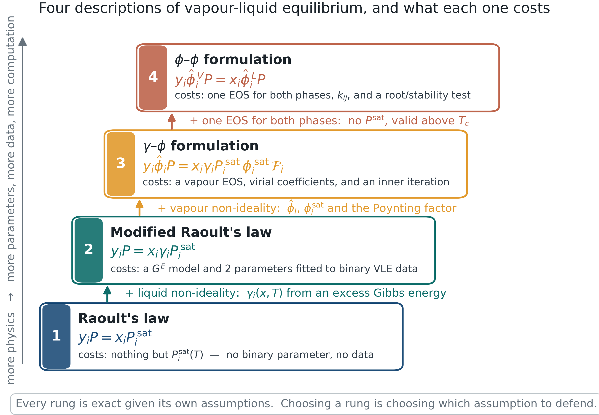
F4.1 · The four descriptions, with the physics added and the cost incurred at each step.
4.1 · Four descriptions of the same equilibrium
A decision table, not a ranking.
| System | Description | Because |
|---|---|---|
| Benzene / toluene, 1 atm | Raoult | Chemically similar; no binary data needed |
| Ethanol / water, 1 atm | Modified Raoult | Strongly non-ideal liquid, near-ideal vapour |
| Acetic acid / water, 1 atm | Gamma-phi | Vapour associates; \hat\varphi \ne 1 at 1 atm |
| Methane / propane, 80 bar | Phi-phi | One component is supercritical |
| CO₂ / ethanol, 100 bar | Phi-phi with a G^E mixing rule | Supercritical and polar — Section 4.7 |
The last row is the case neither classical description handles. Section 4.7 builds the description that does, and reports honestly what it is worth.
PART II
Section 4.2 What the four descriptions produce.
Four classes of behaviour, one criterion, and an azeotrope that belongs to the pressure rather than to the mixture.
4.2 · Solution types and azeotropes
The classification is one statement about the sign and size of G^E, read against a common Raoult reference.
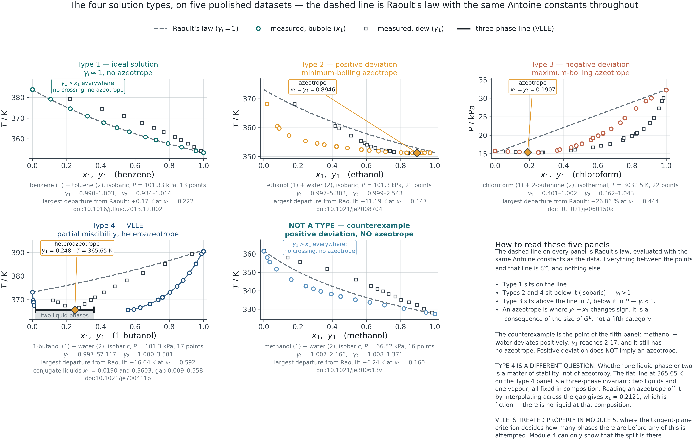
F4.11 · Four published sets, DOIs on the figure. Dashed line: Raoult’s law with the same Antoine constants throughout.
4.2 · Solution types and azeotropes
An azeotrope is not a category a mixture belongs to. It is a root of one equation, and the root either lies in (0,1) or it does not.
y_1 = x_1 \iff \gamma_1 P_1^{\rm sat} = \gamma_2 P_2^{\rm sat} \iff \alpha_{12} \equiv \frac{\gamma_1 P_1^{\rm sat}}{\gamma_2 P_2^{\rm sat}} = 1
\alpha_{12}\big|_{x_1 \to 0} = \gamma_1^\infty\,\frac{P_1^{\rm sat}}{P_2^{\rm sat}}, \qquad \alpha_{12}\big|_{x_1 \to 1} = \frac{1}{\gamma_2^\infty}\,\frac{P_1^{\rm sat}}{P_2^{\rm sat}}
The test at the ends
If \alpha_{12} is above 1 at one end and below 1 at the other, a continuous \alpha_{12}(x_1) must cross, and the crossing is the azeotrope. Only the two \gamma^\infty and the vapour-pressure ratio are needed — no interior data at all.
Two components, one verdict
Methanol + water has a genuine positive deviation, \gamma_1^\infty = 2.41, and no azeotrope: P_1^{\rm sat}/P_2^{\rm sat} is already 3.6 to 4.3, so \alpha_{12} never approaches 1. Type 2 and Type 3 differ by the vapour pressures, not by the deviation.
4.2 · Solution types and azeotropes
Two end-point volatilities place a system in a quadrant. Five published systems, five correct verdicts.
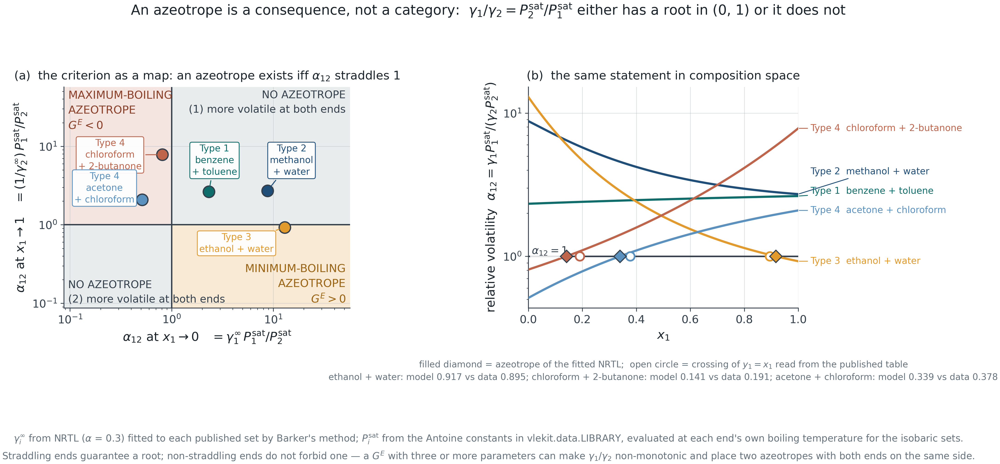
What was predicted
\gamma^\infty from an NRTL fitted by Barker to each set, and P^{\rm sat} from Antoine. Ethanol + water: \alpha = 12.96 and 0.92 — straddles, so minimum-boiling. Chloroform + 2-butanone: 0.81 and 7.83 — straddles from below, so maximum-boiling.
What checked it
The measured relative volatility, from x_1 and y_1 alone, with no P^{\rm sat} and no model: it crosses 1 for exactly the three systems the map predicted. Five out of five, by two routes sharing no numbers.
F4.12 · Five published systems on the criterion map, and the same statement in composition space. The two routes are independent.
4.2 · Solution types and azeotropes
Gibbs-Konovalov: {\rm d}P/{\rm d}x_1 = 0 exactly where y_1 = x_1. An azeotrope is always a stationary point; the sign of G^E decides which kind.
The argument, without a model
\gamma_i > 1 puts P = x_1\gamma_1 P_1^{\rm sat} + x_2\gamma_2 P_2^{\rm sat} above the Raoult straight line at every interior composition. A continuous curve that starts and ends on a line and lies above it in between has an interior maximum.
Maximum in P is minimum in T
Higher pressure at fixed T means the mixture boils below both pure components. So positive deviation gives a minimum-boiling azeotrope, and negative deviation reverses every step of the argument to give a maximum-boiling one.
Confirmed, not quoted
{\rm d}P/{\rm d}x_1 at the computed azeotrope is -2\times10^{-9} kPa for ethanol + water, +2\times10^{-9} for chloroform + 2-butanone and -1\times10^{-9} for acetone + chloroform. Konovalov to nine decimals.
And the uncomfortable corollary: the P-x curve is flat at the azeotrope, so the pressure carries almost no information about where it sits. The same fits that reproduce P to 0.32 kPa misplace the azeotrope by +0.023, -0.050 and -0.038 in x_1. If the azeotropic composition is the number your design needs, it must be in the objective function.
4.2 · Solution types and azeotropes
\gamma_1/\gamma_2 depends on composition, P_2^{\rm sat}/P_1^{\rm sat} only on temperature. Move the pressure and the balance point moves.
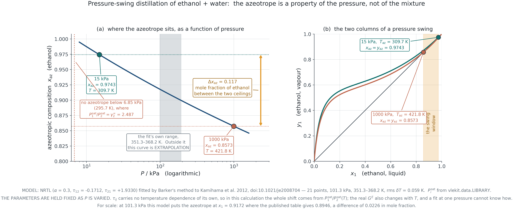
The window
Ethanol + water: x_{\rm az} = 0.9743 at 15 kPa and 0.8573 at 1000 kPa — a window of 0.117. Below 6.85 kPa (295.7 K) there is no azeotrope at all, because P_1^{\rm sat}/P_2^{\rm sat} has fallen to \gamma_2^\infty = 2.487.
What is assumed
NRTL was fitted at 101.3 kPa over 351.3–368.2 K and its \tau_{ij} carry no T dependence, so the whole shift comes from P^{\rm sat}(T). The 1000 kPa point sits 53.6 K outside that range: an extrapolation.
F4.13 · NRTL by Barker on doi:10.1021/je2008704, held fixed as P varies.
4.2 · Solution types and azeotropes
Two columns at two pressures beat the azeotrope only if the azeotrope moves. Two Type 3/4 systems, two answers.
Ethanol + water: it moves
x_{\rm az} runs 0.9743 at 15 kPa to 0.9172 at 101 kPa — 0.057 over the range a real vacuum column would use, and 0.117 out to 1000 kPa. The prize is real but modest, which is why industry usually prefers extractive or azeotropic distillation to a second column plus a vacuum system.
Acetone + chloroform: it does not
x_{\rm az} runs 0.3402 at 90 kPa to 0.3469 at 25 kPa — 0.007 over a factor of 3.5 in pressure. A pressure swing on this pair is not a separation, it is a rounding error.
The reason is in the criterion. Acetone + chloroform has P_1^{\rm sat}/P_2^{\rm sat} \approx 1.18 at both ends, barely moving with temperature, while \gamma_1/\gamma_2 is steep in composition, so the root hardly shifts. Ethanol + water has two components of similar volatility and a \gamma_1/\gamma_2 that is nearly flat near x_1 = 0.9: a small change in the vapour-pressure ratio then moves the crossing a long way.
PART III
Section 4.3 A reported \gamma is not a measurement.
It is four measured numbers and two assumptions.
4.3 · From measurement to activity coefficient
Four numbers per point, each with its own uncertainty, and none of them is \gamma.
Temperature
Calibrated thermometer in the boiling liquid. Typically \pm 0.05 K. Its error enters through P_i^{\rm sat}(T), which is exponential in T.
Pressure
Manometer or transducer. Typically \pm 0.05 kPa. Usually the best measured variable, which is why Barker’s method uses it.
Liquid composition
Sample and analyse — refractometry, gas chromatography, density. Typically \pm 0.001 mole fraction, and only if the calibration is honest.
Vapour composition
Condense and analyse. The hardest measurement: partial condensation, holdup, and entrainment all bias it. Typically \pm 0.002, often worse.
4.3 · From measurement to activity coefficient
Two assumptions convert four measurements into an activity coefficient.
\gamma_i = \frac{y_i \Phi_i P}{x_i P_i^{\rm sat}(T)}, \qquad \Phi_i = \frac{\hat\varphi_i}{\varphi_i^{\rm sat}} \exp\!\left[-\frac{v_i^L (P - P_i^{\rm sat})}{RT}\right]
Assumption A — the vapour
Setting \Phi_i = 1 is modified Raoult. For acetone/chloroform at 50 °C the virial correction shifts \ln\gamma_1 by up to 0.008 — small, but systematic, and a consistency test reacts to systematic errors, not to scatter.
Assumption B — the vapour pressure
P_i^{\rm sat} comes from a correlation, not from this experiment. Antoine coefficients are copied between references with unit errors more often than any other quantity in this subject. Check the correlation against the normal boiling point before you trust one activity coefficient.
4.3 · From measurement to activity coefficient
The paper gives you four columns. Three of the things you need are not in it.
Step 2, on chloroform + 2-butanone at 303.15 K (doi:10.1021/je060150a): the table’s pure end points read 32.19 and 15.74 kPa, and the stored Antoine constants give 32.33 and 15.22 — +0.44 % on chloroform but -3.28 % on 2-butanone. That error goes straight into every \gamma_2, and it is larger than every vapour-phase correction on the next slide put together.
4.3 · From measurement to activity coefficient
Propagate, and the ranking is not the one students expect.
\sigma^2(\ln\gamma_1) = \left(\frac{\sigma_y}{y_1}\right)^{\!2} + \left(\frac{\sigma_P}{P}\right)^{\!2} + \left(\frac{\sigma_x}{x_1}\right)^{\!2} + \left(\frac{{\rm d}\ln P_1^{\rm sat}}{{\rm d}T}\,\sigma_T\right)^{\!2}
The temperature term
P^{\rm sat} is exponential in T, so {\rm d}\ln P^{\rm sat}/{\rm d}T is of order 0.03\ {\rm K^{-1}} near the normal boiling point. A 0.05 K error is then worth 0.0015 in \ln\gamma — comparable to the composition term.
The dilute ends
\sigma_x/x_1 blows up as x_1 \to 0. At x_1 = 0.02 a 0.001 error in composition is 5 % in \gamma_1. That is exactly where the model is least constrained and where \gamma^\infty is read off.
The consequence
Quoting \gamma to four figures from a thermometer read to 0.1 K is arithmetic, not measurement. Report the uncertainty or do not report the figure.
4.3 · From measurement to activity coefficient
\Phi_i is three factors, not one. Applied together they largely cancel; applied singly they do not.
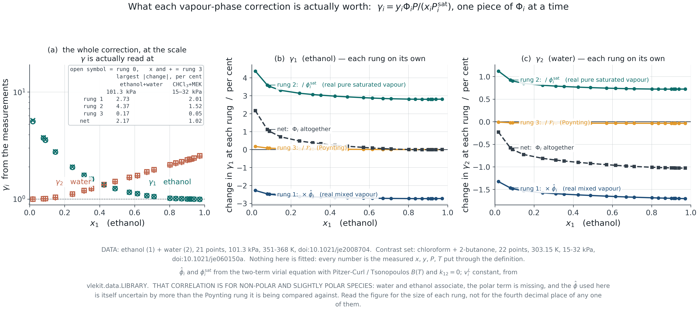
The sizes, chloroform + 2-butanone at 15–32 kPa
\hat\varphi_i alone moves \ln\gamma by 0.014 and 0.020. Adding \varphi_i^{\rm sat} moves it back by 0.015 and 0.011. Poynting adds 0.0005. Net over all three: 0.009 and 0.010.
Why they cancel
\hat\varphi_i in the mixture and \varphi_i^{\rm sat} for the pure saturated vapour have the same physical origin and, at these pressures, nearly the same value. Applying one without the other is worse than applying neither — a correction of one sign with its compensating partner omitted.
F4.15 · Each rung of \Phi_i on its own, ethanol + water at 101.3 kPa (doi:10.1021/je2008704) with chloroform + 2-butanone (doi:10.1021/je060150a) as the low-pressure contrast. Nothing here is fitted.
4.3 · From measurement to activity coefficient
Not “correct above one bar”. Compare the size of the correction with the uncertainty of the measurement it is correcting, on your own dataset.
| System | P / kPa | net \max\lvert\Delta\ln\gamma_1\rvert | median \sigma(\ln\gamma_1) | ratio |
|---|---|---|---|---|
| Benzene + toluene | 101.3 | 0.0329 | 0.0130 | 2.53 |
| Acetone + chloroform | 101.3 | 0.0108 | 0.0064 | 1.70 |
| Methanol + water | 66.5 | 0.0282 | 0.0185 | 1.53 |
| Ethanol + water | 101.3 | 0.0214 | 0.0215 | 1.00 |
| Chloroform + 2-butanone | 20.4 | 0.0086 | 0.0443 | 0.19 |
At atmospheric pressure the correction is comparable to or larger than the noise and you may not neglect it. At 20 kPa it is a fifth of the noise and you may — and you say so, with the number. \sigma is propagated from the uncertainties the papers themselves report.
4.3 · From measurement to activity coefficient
The two kinds of dataset, and the one composition where \gamma comes for free.
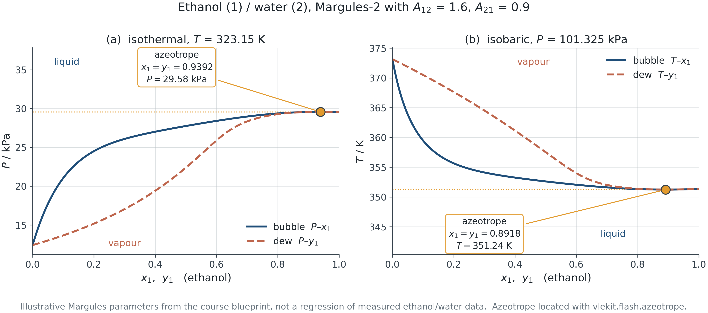
Isothermal is easier to use
At constant T the Gibbs-Duhem equation has no enthalpy term. Isobaric data are more common — that is how a column runs — and harder, because T varies across the composition range.
The azeotrope is a free measurement
At x_i = y_i the equilibrium condition gives \gamma_1 / \gamma_2 = P_2^{\rm sat} / P_1^{\rm sat} directly, with no vapour sample at all. In an old dataset it is often the only point that can be trusted without qualification.
F4.2 · The same system as P-x-y and as T-x-y, with the azeotrope marked on both.
PART IV
Section 4.4 Can this dataset be believed?
Gibbs-Duhem makes a binary VLE dataset over-determined, so the data can be tested against thermodynamics with no model assumed correct.
4.4 · Thermodynamic consistency testing
One of the four measured variables is redundant. The size of the prediction error is the test.
x_1 \frac{{\rm d}\ln\gamma_1}{{\rm d}x_1} + x_2 \frac{{\rm d}\ln\gamma_2}{{\rm d}x_1} = 0 \qquad \text{(constant } T,\,P)
Satisfied by construction
Any model derived from a single G^E satisfies this identically — the residual is zero to machine precision. Finding otherwise means the code is wrong, not the fluid.
Satisfied by measurement
Data satisfy it only to within their errors. The two statements look alike on a slide and are completely different in practice. Everything that follows is a way of deciding whether the gap is noise or a real error.
4.4 · Thermodynamic consistency testing
The oldest test, the most quoted, and the weakest.
\int_0^1 \ln\frac{\gamma_1}{\gamma_2}\,{\rm d}x_1 = 0, \qquad D = 100\,\frac{|A^+ - A^-|}{A^+ + A^-}
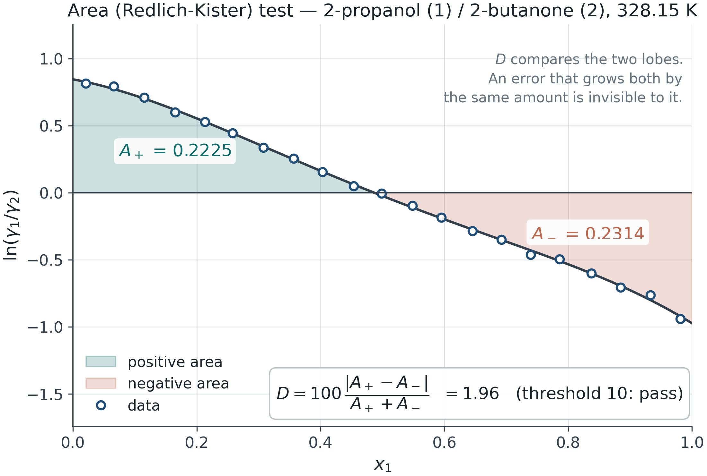
F4.3 · The two areas whose difference must vanish, with D reported.
4.4 · Thermodynamic consistency testing
An integral cannot see an error that changes sign. This is a structural limitation, not a matter of threshold.
The construction
Perturbing y_1 shifts the measured ratio by \delta\ln(\gamma_1/\gamma_2) = \delta y_1 / [\,y_1(1-y_1)\,].
Choose \delta y_1 = \varepsilon\, y_1 (1-y_1)(2x_1 - 1) and the ratio shifts by \varepsilon(2x_1-1) — odd about x_1 = \tfrac12, so it contributes exactly nothing to the integral.
The result
At \varepsilon = 0.4 the dataset is grossly wrong. The area test reports D = 1.3 against a threshold of 10 — healthier than the merely noisy control — while the point and direct tests both return the worst possible index.
An area test is a necessary condition. It is never a sufficient one.
4.4 · Thermodynamic consistency testing
Van Ness, Byer and Gibbs: fit P-x only, then predict y. Errors cannot cancel, because nothing is integrated.
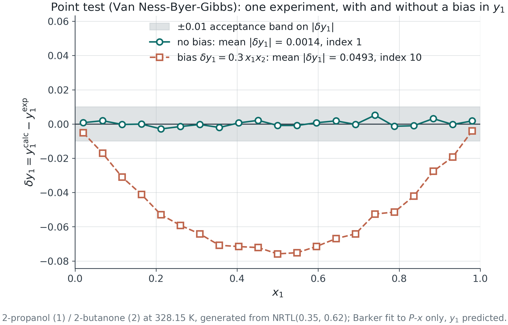
The logic
Barker’s method uses only P and x. If the data obey Gibbs-Duhem, y is already implied by the P-x curve, so the fit must reproduce it. Mean |\delta y_1| < 0.01 is the conventional pass.
The trap
A large residual in P means the model failed, not the data. Check {\rm rms}\,\delta P before blaming the measurement, and use a model flexible enough to follow the P-x curve.
F4.4 · Point-test residuals for a consistent and an inconsistent dataset on common axes.
4.4 · Thermodynamic consistency testing
The same redundancy, expressed in the variable Gibbs-Duhem is actually written in. This is what modern journals expect.
\delta = \ln\!\left(\frac{\gamma_1}{\gamma_2}\right)_{\!\rm exp} - \ln\!\left(\frac{\gamma_1}{\gamma_2}\right)_{\!\rm fitted}
| Index | RMS \delta | Verdict |
|---|---|---|
| 1 – 3 | < 0.075 | Good. Publishable without comment |
| 4 – 5 | 0.075 – 0.125 | Marginal. Requires an explanation |
| 6 – 10 | > 0.125 | Reject, or diagnose the fault |
The fitted values come from a Barker fit to P-x alone, so \delta measures the data, not the fit — provided the model follows P-x.
4.4 · Thermodynamic consistency testing
Different tests are blind to different things. That is the reason to run more than one.
Infinite dilution
Kojima’s test compares (G^E/RT)/x_1x_2 with \ln(\gamma_1/\gamma_2) at each pure end point, where the two must coincide. Catches the dilute region, which the area test averages away and where \gamma^\infty is read off.
Herington D-J
The area test with an empirical allowance J = 150\,\Delta T/T_{\min} for the temperature variation of an isobaric set. Widely required by referees; Wisniak has shown it both passes bad data and fails good data.
Wisniak L/W
Built on an energy balance rather than on G^E, so it responds to a different combination of the measurements. Worth quoting when a dataset is contested.
4.4 · Thermodynamic consistency testing
At constant P the temperature varies across the composition range, and the excess enthalpy term returns.
x_1 \frac{{\rm d}\ln\gamma_1}{{\rm d}x_1} + x_2 \frac{{\rm d}\ln\gamma_2}{{\rm d}x_1} = -\frac{H^E}{RT^2}\,\frac{{\rm d}T}{{\rm d}x_1}
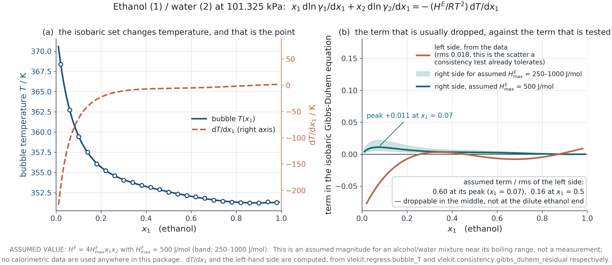
F4.9 · Size of the enthalpy term against the left-hand side, ethanol/water at 101.325 kPa. The H^E magnitude is assumed and labelled as such on the figure.
4.4 · Thermodynamic consistency testing
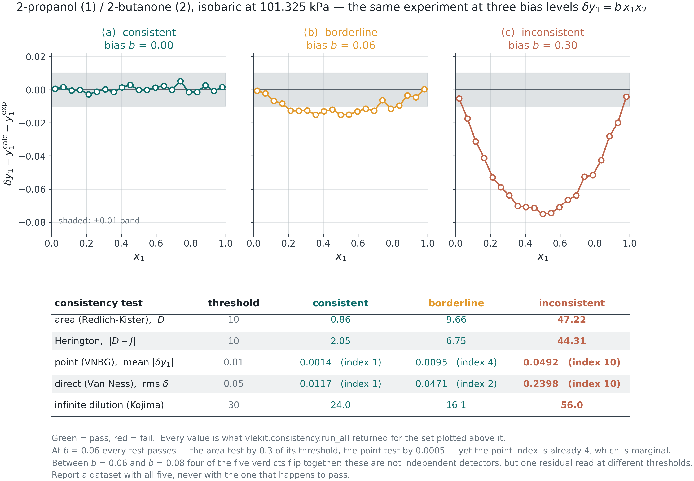
F4.5 · The same experiment at three bias levels, with every statistic tabulated.
4.4 · Thermodynamic consistency testing
A failure is the beginning of an investigation. Each fault has a signature.
| Constant offset in \delta y | Vapour sampling bias — partial condensation, or a GC calibration offset |
| Residual bowed, one sign throughout | Wrong Antoine constants, or the vapour-phase correction omitted when it mattered |
| Sign change near the azeotrope | Composition analysis non-linear across the range |
| Fails at one end only | Impurity concentrating in the volatile or the heavy component |
| Large {\rm rms}\,\delta P as well | The model, not the data. Refit with a more flexible G^E before concluding anything |
PART V
Section 4.5 Regression converges to something for almost any input.
The question is never whether a fit exists. It is what the fit is worth.
4.5 · Building an activity coefficient model from data
Same data, same model, four objectives, four answers. This is not numerical noise; it is a choice about which measurement you trust.
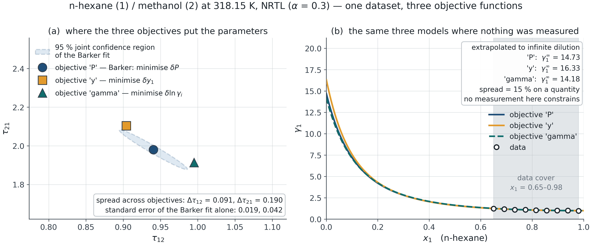
The spread is not small
Across objectives the parameters move by several times the standard error that any one of them reports. An uncertainty that ignores the choice of objective is understating the real one.
Minimise what you measured well
Fitting \ln\gamma weights the dilute ends heavily — precisely where the measurement is worst. Fitting y fits the least accurate variable. Fitting P uses the best one.
F4.6 · Parameters and predictions from three objective functions on one dataset.
4.5 · Building an activity coefficient model from data
Fit to P-x alone. Do not fit y at all.
P^{\rm calc}(x_1) = x_1 \gamma_1 P_1^{\rm sat} + x_2 \gamma_2 P_2^{\rm sat}, \qquad \min_{\boldsymbol\theta} \sum_k \left(P^{\rm calc}_k - P^{\rm exp}_k\right)^2
It uses the best data
P and x are the two accurately measured variables. Nothing in the objective depends on the vapour sample.
It makes the tests possible
A y that was never fitted can be compared with a y that was measured. That comparison is the point test and the direct test. Fit y and you destroy your own diagnostic.
Many datasets have no y
Static-cell measurements report P-x only, by design. Barker is not a compromise for those data — it is the intended method.
4.5 · Building an activity coefficient model from data
A model with more parameters cannot fit worse. The residual alone will always choose the larger model.
{\rm AIC} = n \ln\frac{\rm SSE}{n} + 2k
What AIC answers
Whether the improvement in fit is worth the parameter. A difference below about 2 is conventionally no evidence at all — the data cannot separate those models.
Typical outcome
On twenty-one points at realistic noise, Margules, van Laar, Wilson, NRTL and UNIQUAC land within 2 AIC units of one another. Any claim that one “describes the system better” needs more than that dataset.
AIC compares models fitted the same way. It does not compare objective functions: each minimises a different residual vector, so the likelihood being approximated is not the same likelihood.
4.5 · Building an activity coefficient model from data
Two standard errors quoted separately describe a rectangle the fit never occupied.
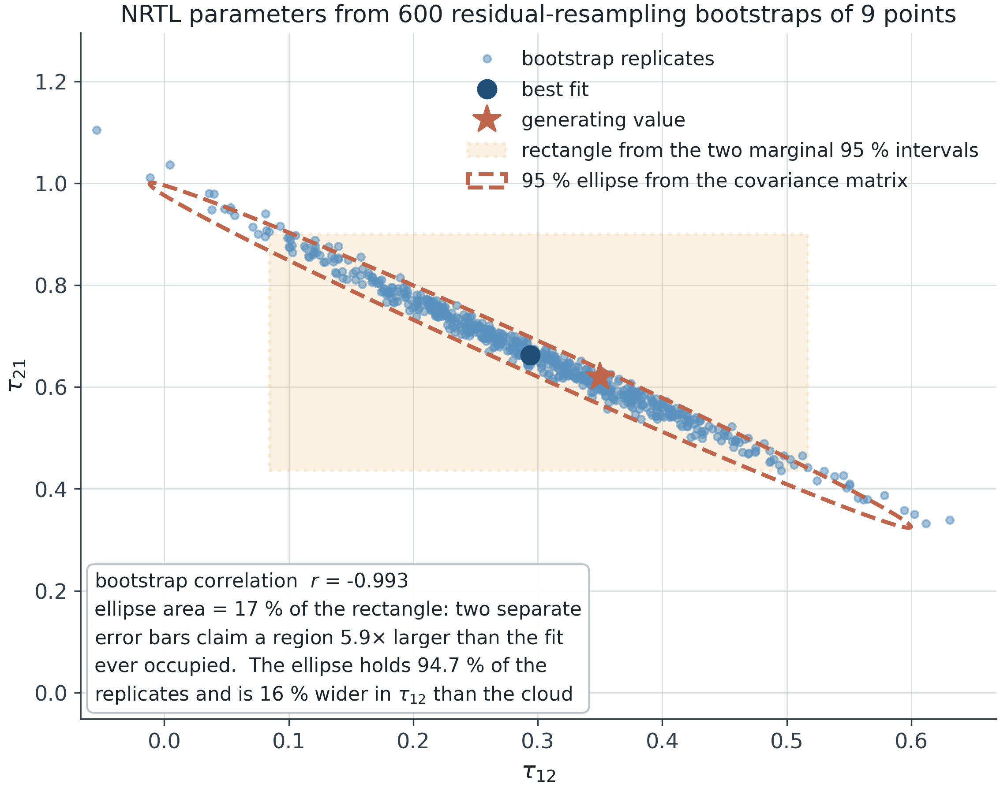
What the cloud shows
A correlation near -1: a long narrow ridge of parameter pairs that fit equally well. The two parameters are not separately identifiable from one isotherm.
Why bootstrap
The linearised errors assume a quadratic optimum and normal residuals. For two parameters and twenty points, neither holds well. Resampling makes no such assumption and is transparent enough to explain in a report.
F4.7 · Bootstrap replicates with the linearised ellipse over them.
4.5 · Building an activity coefficient model from data
Two fits the data cannot separate can disagree completely about the region you care about.
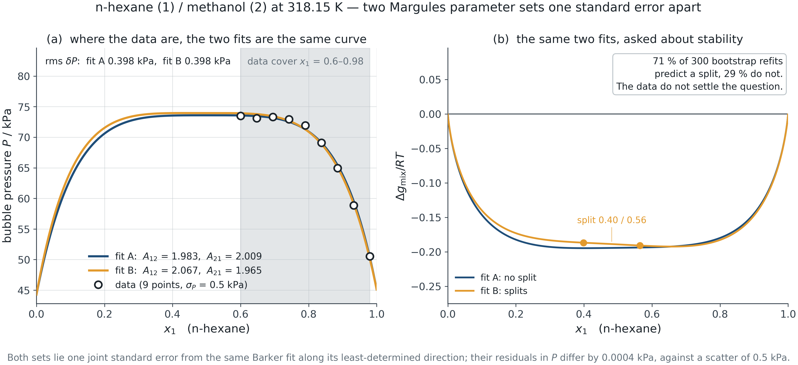
Same evidence, different claims
Fitted only where data exist, several models agree to within the scatter. They then report \gamma^\infty differing by tens of per cent, and they do not agree on whether the liquid splits into two phases.
Wilson is the clearest case
Wilson is structurally incapable of predicting a miscibility gap for any parameters. Fitted to a system that has one, it buys the same fit with an absurd \gamma^\infty instead. That number is a symptom of the functional form, not a property of the fluid.
F4.8 · Statistically indistinguishable fits extrapolated beyond the data.
4.5 · Building an activity coefficient model from data
Ethanol + water, 21 published points. The models agree where the measurements are and disagree about the limit the data barely reach.
| Model | \gamma_1^\infty | \gamma_2^\infty | rms \delta y_1 | \DeltaAIC |
|---|---|---|---|---|
| UNIQUAC | 6.00 | 2.54 | 0.0042 | 0 |
| van Laar | 5.85 | 2.51 | 0.0040 | 8.7 |
| NRTL | 5.77 | 2.49 | 0.0039 | 20.2 |
| Wilson | 6.56 | 2.65 | 0.0062 | 49.5 |
| Margules-2 | 5.19 | 2.25 | 0.0068 | 76.5 |
The paper reports u(y_1) = 0.015. The top three models predict y_1 to 0.004 — indistinguishable within the measurement error, with an AIC ordering driven by differences the data cannot resolve. What separates them is not the fit. It is that \gamma_1^\infty spans 5.19 to 6.56, a spread of 26 %. Data: doi:10.1021/je2008704.
4.5 · Building an activity coefficient model from data
Solve each model’s two parameters so that every model has identical \gamma_1^\infty and \gamma_2^\infty. Nothing is left to adjust. The curves still differ.
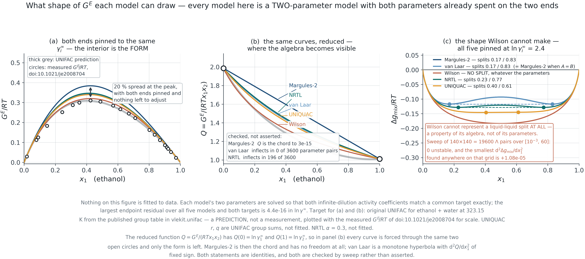
The cost of choosing a form
With both ends matched to 4\times10^{-16} in \ln\gamma^\infty, G^E/RT at its peak still spans 20 % across the five forms — 16 % when the ends are pinned to the NRTL fit instead of to UNIFAC. That residue is the functional form and nothing else.
Same numbers, different function
Margules-2 and van Laar come out with identical parameters, 1.7528 and 0.9112: in both, the two parameters are \ln\gamma_1^\infty and \ln\gamma_2^\infty. Different curves all the same. A parameter value quoted without its model is meaningless.
F4.16 · Nothing on this figure is fitted. Ends pinned to an original-UNIFAC prediction for ethanol + water at 323.15 K, plotted against measured G^E/RT (doi:10.1021/je2008704) for scale.
4.5 · Building an activity coefficient model from data
Reduce out the ends. Q = G^E/(RT x_1 x_2) has Q(0) = \ln\gamma_1^\infty and Q(1) = \ln\gamma_2^\infty, so every pinned model passes through the same two points and only the shape is left.
No freedom at all
For Margules-2, Q is the straight chord between the two end values — verified to 3\times10^{-15} over a 60\times60 parameter grid. There is nothing to choose: fix the ends and the whole curve is fixed.
One curvature, fixed sign
Van Laar’s Q is a monotone hyperbola: {\rm d}^2Q/{\rm d}x_1^2 changed sign in 0 of 3600 parameter pairs. It can bow away from the chord, but only one way, and it cannot carry an interior feature.
Local composition buys inflection
Wilson inflects in 392 of 3600 pairs, UNIQUAC in 377, NRTL in 196. That is what the extra structure is for — not a better fit at the ends, which any of them can match exactly, but a shape the two-parameter chord cannot make.
This is the honest reason to prefer NRTL or UNIQUAC over Margules for a strongly non-ideal binary, and it has nothing to do with the number of parameters: all five here have exactly two.
4.5 · Building an activity coefficient model from data
Not “does not usually”. Cannot, for any parameters. This is algebra, not a limitation of fitting.
\frac{{\rm d}^2}{{\rm d}x_1^2}\frac{\Delta g_{\rm mix}}{RT} = \frac{\Lambda_{12}^2}{x_1 (x_1 + \Lambda_{12}x_2)^2} + \frac{\Lambda_{21}^2}{x_2 (x_2 + \Lambda_{21}x_1)^2}
Why that settles it
A sum of two squares over positive quantities. Both \Lambda are ratios of Boltzmann factors and so are positive, hence the second derivative is strictly positive at every composition, hence \Delta g_{\rm mix} is convex, hence there is no common tangent and no phase split. Ever.
Checked, not asserted
The closed form matches a numerical second derivative to one part in 10^5 over 4000 random (\Lambda_{12}, \Lambda_{21}, x_1); the smallest value found anywhere is 0, approached only as \Lambda \to 0. A 140\times140 grid gives 0 unstable pairs of 19600. For contrast, Margules-2 crosses at A = 2 exactly and splits above it.
4.5 · Building an activity coefficient model from data
Not a capability table. Three questions about your own system, answered before the regression runs.
| Is G^E skewed, or symmetric about x_1 = \tfrac12? | Symmetric: Margules-2 is enough and its parameters mean something. Strongly skewed: the chord will not do it |
| Does the reduced Q change curvature? | If it does, only the local-composition forms can follow it. Van Laar and Margules cannot, at any parameter values |
| Might the system split into two liquid phases, now or under extrapolation? | Wilson is excluded by algebra. NRTL and UNIQUAC can represent a split; whether they should is Module 5 |
| Do you need the parameters at another temperature? | Fit \Delta u_{ij}, not \tau_{ij}, and say what you assumed — three slides on, and F4.9 |
4.5 · Building an activity coefficient model from data
Every dataset in this module is binary. No column is. What extends to N components, and what it costs in data, is what actually decided which model you were taught.
\ln\gamma_i = \frac{\sum_j \tau_{ji}G_{ji}x_j}{\sum_k G_{ki}x_k} + \sum_j \frac{x_j G_{ij}}{\sum_k G_{kj}x_k}\left(\tau_{ij} - \bar\tau_j\right), \qquad G_{ij} = \exp(-\alpha_{ij}\tau_{ij})
Every index runs over pairs
Wilson, NRTL and UNIQUAC are built from the local composition around one molecule, which is a sum over its neighbours. A third component adds terms to those sums and no new kind of term: the \tau_{12} fitted on the 1-2 binary is the \tau_{12} that appears above. N components need N(N-1)/2 binary pairs and no ternary parameter at all.
Margules and van Laar have no such extension
Their multicomponent forms are constructed rather than derived, and each carries a ternary constant that has to be fitted to ternary data — which is rarely measured. That, and not binary accuracy, is why the local-composition models won, and it is why a process simulator asks you for binary parameters and nothing else.
4.5 · Building an activity coefficient model from data
Three binary parameter sets, no ternary parameter, one ternary map.
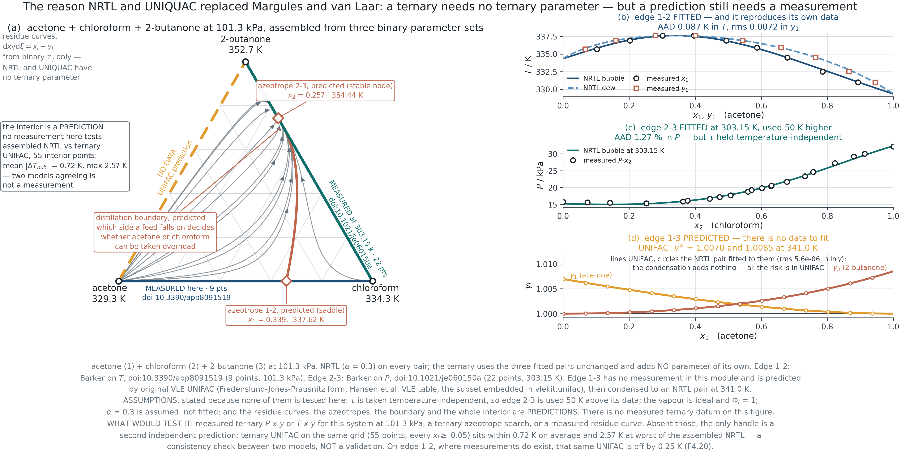
Two edges fitted to measurement
Acetone + chloroform, 9 points at the map’s own pressure: AAD 0.087 K in T (doi:10.3390/app8091519). Chloroform + 2-butanone, 22 points: AAD 1.27 % in P (doi:10.1021/je060150a), measured 50 K below where it is used.
One edge predicted
Acetone + 2-butanone: no dataset could be sourced, so UNIFAC supplies it — \gamma^\infty = 1.0070 and 1.0085 at 341.0 K, almost ideal. All of the risk on this edge is in UNIFAC.
F4.19 · Acetone + chloroform + 2-butanone at 101.3 kPa. Original VLE UNIFAC on the unmeasured edge; \tau temperature-independent and \alpha = 0.3 assumed.
4.5 · Building an activity coefficient model from data
Five fixed points, two azeotropes and a distillation boundary — every one of them out of binary numbers, and every one of them a prediction.
The fixed points
Pure acetone at 329.34 K and pure chloroform at 334.35 K are unstable nodes. The acetone + chloroform azeotrope, x_1 = 0.3395 at 337.62 K, is a saddle; the chloroform + 2-butanone azeotrope, x_2 = 0.2568 at 354.44 K, is the stable node. Both are maximum-boiling.
The boundary follows
Two unstable nodes and one stable node force a separatrix, integrated here from the 1-2 azeotrope to the 2-3 azeotrope. Which side of that line a feed falls on decides whether acetone or chloroform can be taken overhead — a process decision resting on no ternary measurement.
What was checked
Gibbs-Duhem residual 2\times10^{-11} on the assembled ternary, pure limits exact, and each fitted edge reproducing its own data. Those test the algebra and the edges. They say nothing about the interior.
4.5 · Building an activity coefficient model from data
The interior of that triangle is scored against a second prediction. Say what that is worth, and say what would test it.
The only handle available
Over 55 interior points with every x_i \ge 0.05, the assembled binary NRTL and a direct ternary UNIFAC agree to a mean of 0.72 K in bubble temperature, 2.57 K at worst. Two models built on the same kind of assumption agreeing is a lower bound on the uncertainty — not evidence about the fluid.
And the calibration of that handle
On edge 1-2, where measurement exists, that same UNIFAC is 0.25 K out on average. So the interior spread is of the order of one model’s known error on an edge. It bounds nothing by itself, and quoting it as an accuracy would be a misrepresentation.
What would test it: measured ternary P-x-y or T-x-y for this system at 101.3 kPa, a ternary azeotrope search, or a measured residue curve. None could be sourced, so the map stands as a prediction and is labelled as one on its own face.
4.5 · Building an activity coefficient model from data
Reporting the residual on the points you fitted is not evidence.
Cross-validation by composition
Train on the middle of the range and predict the dilute ends, then the reverse. Report both. A model that fits its training points three times better than it predicts the held-out ones has learned the scatter.
Splitting on alternate points tests almost nothing — neighbouring points carry almost the same information.
Against a prediction
UNIFAC predicts \gamma from group contributions with nothing fitted to your data. Your model must beat it — it saw the answer. The question is by how much, and whether the margin survives outside the fitted range.
State the margin in a quantity someone would act on: \gamma^\infty, or the azeotrope composition. Not in rms.
4.5 · Building an activity coefficient model from data
The common industrial case is not a noisy dataset. It is no dataset. Group contribution answers with nothing fitted, and the question a student must answer with a number is how wrong that is.
Which UNIFAC
Original VLE UNIFAC — the Fredenslund-Jones-Prausnitz form with the Hansen et al. group-interaction table. Not modified UNIFAC (Dortmund): no temperature-dependent a_{mn}, no revised combinatorial. Dortmund was fitted to more data and gives different numbers. A prediction is reproducible only if the table it came from is named.
The ladder
Three published binaries, the same bubble-point routine, the same ideal-vapour assumption, the same points: 0 parameters (UNIFAC), 1 (two-suffix Margules by Barker), 2 (NRTL by Barker, \alpha = 0.3). The only thing that changes is how many numbers were allowed to see the data.
The measuring stick
Every error divided by the uncertainty the source paper reports. Below 1, the model sits inside the noise of the measurement judging it, and no further fitting can be shown to help. An error is only “good enough” against something.
4.5 · Building an activity coefficient model from data
Three published binaries, and two of the three answers are not the ones the usual story predicts.
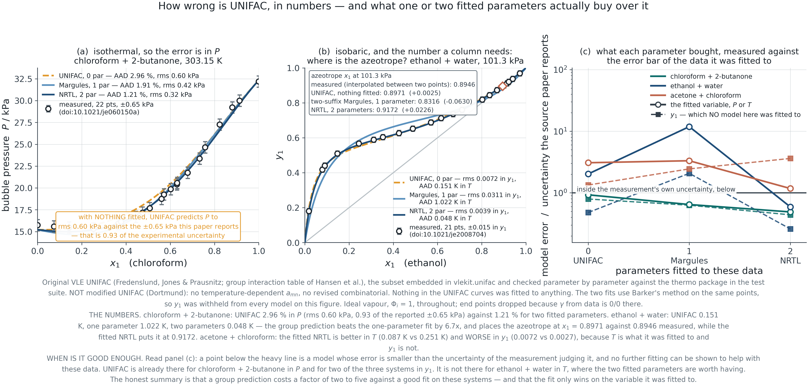
The prediction beats the fit
Ethanol + water at 101.3 kPa: UNIFAC gives AAD 0.15 K in bubble temperature against 1.02 K for the one-parameter fit — better by 6.7 times, with nothing fitted. It places the azeotrope at x_1 = 0.8971 against 0.8946 measured, where the Barker-fitted NRTL says 0.9172.
Inside the experimental error bar
Chloroform + 2-butanone at 303.15 K: UNIFAC’s rms in bubble pressure is 0.60 kPa against the \pm 0.65 kPa the paper itself reports — 0.93 of the measurement’s own uncertainty, with no parameter fitted to it.
F4.20 · doi:10.1021/je060150a, doi:10.1021/je2008704, doi:10.3390/app8091519. Both fits are Barker on the same points, so y_1 was withheld from every model on the figure.
4.5 · Building an activity coefficient model from data
Acetone + chloroform: the fitted NRTL wins on the variable it was fitted to and loses on the one it never saw.
The two columns
NRTL fitted by Barker on T: AAD 0.087 K against UNIFAC’s 0.251 K — the fit wins where it was fitted. rms in y_1: 0.0072 against UNIFAC’s 0.0027 — the fit loses by a factor of 2.7 on the variable Barker’s method deliberately withholds. And y is what an azeotrope and a stage count are made of.
The lesson
A fit to a poor objective on thin data can be worse than a prediction that used none of it. State the margin over UNIFAC in a quantity someone would act on, and on a variable the fit did not get to optimise — otherwise the margin is bookkeeping.
This is not a claim that UNIFAC is as good as a fit. On these three systems two fitted parameters buy a factor of 1.9 to 3.4 on the fitted variable. The claim is that the gap is a number, that it is often smaller than the measurement error, and that it must be quoted somewhere the fit had no advantage.
4.5 · Building an activity coefficient model from data
Parameters fitted at one temperature, used at another.
\tau_{ij} = \exp\!\left(-\frac{\Delta u_{ij}}{RT}\right) \quad\Longrightarrow\quad \frac{\partial (G^E/RT)}{\partial T}\Big|_{x} = -\frac{H^E}{RT^2}
What the extrapolation assumes
Fitting \tau directly at one temperature and reusing it assumes G^E/RT is independent of T — that is, H^E = 0. Fitting \Delta u instead assumes \Delta u is constant, which is weaker but still an assumption.
In practice
Twenty or thirty kelvin is usually tolerable for a non-associating mixture. Across an alcohol/water column from reboiler to condenser it is not, and the error shows up exactly where the column is hardest to control.
4.5 · Building an activity coefficient model from data
A regression report that stops at the parameters is not finished.
PART VI
Section 4.6 Bubble, dew, flash — and the question none of them asks.
4.6 · Bubble, dew and flash
y_i P = x_i \gamma_i P_i^{\rm sat} throughout. What changes is which two of P, T, x, y you were given.
BUBL P
Given x, T; solve for P, y. P = \sum_i x_i \gamma_i P_i^{\rm sat} Everything on the right is known. Explicit.
DEW P
Given y, T; solve for P, x. \frac{1}{P} = \sum_i \frac{y_i}{\gamma_i P_i^{\rm sat}} \gamma_i needs x, which is the answer.
BUBL T
Given x, P; solve for T, y. \sum_i x_i \gamma_i P_i^{\rm sat}(T) = P P_i^{\rm sat} is not computable yet.
DEW T
Given y, P; solve for T, x. \sum_i \frac{y_i}{\gamma_i P_i^{\rm sat}(T)} = \frac{1}{P} Both difficulties at once.
The pattern is in the algebra, not in the physics: the bubble forms are sums, the dew forms are sums of reciprocals. Everything that follows — which one needs a loop, which one is slow, which one fails — comes from that difference and from where the unknown sits.
4.6 · Bubble, dew and flash
Two independent difficulties, and they compose. Nothing here is about the solver; it is about which unknown appears inside which function.
Difficulty 1 — \gamma_i needs the liquid
The activity coefficient is a function of x. In the two DEW problems x is what you are solving for, so \gamma_i must be re-evaluated every step: successive substitution on x, starting from the ideal answer x = y.
Difficulty 2 — P_i^{\rm sat} needs the temperature
Antoine is evaluated at the unknown T in the two T problems, so an outer root-find on T wraps whatever is inside. DEW T has both, and the inner loop runs to convergence at every outer trial temperature.
Which is why the cost is multiplicative rather than additive, and why a loose inner tolerance corrupts the outer root-find instead of merely slowing it: the outer function stops being a smooth function of T.
4.6 · Bubble, dew and flash
Methanol + water, NRTL fitted by Barker to 16 published points, ideal vapour, composition specified as 0.40 in each case.
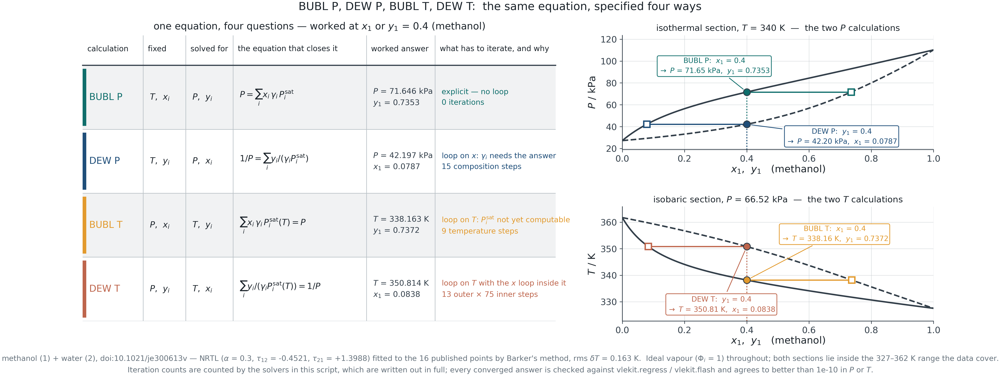
The four answers
BUBL P 71.646 kPa, no iteration at all. DEW P 42.197 kPa in 15 composition steps. BUBL T 338.163 K in 9 temperature steps. DEW T 350.814 K in 13 outer × 75 inner.
The ratio is the lesson
Nothing was made harder: same system, same model, same tolerance. Moving the specification from the liquid to the vapour and from P to T costs about two orders of magnitude in work, and that cost is where a flowsheet fails.
F4.14 · Iteration counts counted by the solvers, not estimated; every answer checked against vlekit to better than 10^{-10}. Data: doi:10.1021/je300613v.
4.6 · Bubble, dew and flash
For one composition at one condition, the four answers must be ordered. If they are not, you have a sign error.
The ordering, and why it must hold
At the same T and specified composition, BUBL P > DEW P: 71.646 against 42.197 kPa. At the same P, BUBL T < DEW T: 338.163 against 350.814 K. The bubble point is the first bubble of vapour, the dew point the last drop of liquid, and the two-phase region lies between them.
It held on all four systems
Benzene + toluene, methanol + water, ethanol + water and chloroform + 2-butanone: sixteen numbers, ordered correctly in every row, with the from-scratch code and vlekit agreeing to 10^{-10}. Two failure modes are caught by one comparison that costs nothing.
4.6 · Bubble, dew and flash
The output of the whole module is two numbers, a column is sized on the second, and neither of them is a constant.
K_i = \frac{y_i}{x_i} = \frac{\gamma_i P_i^{\rm sat}(T)}{P}, \qquad \alpha_{12} = \frac{K_1}{K_2} = \frac{\gamma_1 P_1^{\rm sat}}{\gamma_2 P_2^{\rm sat}}
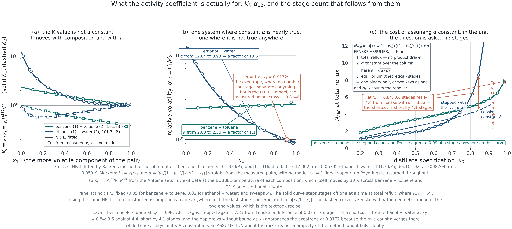
Benzene + toluene: \alpha runs 2.63 to 2.33, a factor of 1.13. Ethanol + water: 12.64 to 0.93, a factor of 13.6, through 1 at the azeotrope. The markers need no model: K_1 = y_1/x_1 from the measured pairs gives 2.38 to 2.78 and 0.90 to 11.98. NRTL by Barker on doi:10.1016/j.fluid.2013.12.002 and doi:10.1021/je2008704.
4.6 · Bubble, dew and flash
The shortcut is free on one system and wrong by four stages on the other — same equation, same effort, no warning either way.
N_{\min} = \frac{\ln\!\left[\dfrac{x_D}{1-x_D}\cdot\dfrac{1-x_B}{x_B}\right]} {\ln\tilde\alpha}, \qquad \tilde\alpha = \sqrt{\alpha_D\,\alpha_B}
Four assumptions
Total reflux, so no product is drawn; \alpha constant over the column, taken as the geometric mean of the two end values; equilibrium stages; and one binary pair, or two keys treated as one. N_{\min} counts the reboiler.
Where it costs nothing
Benzene + toluene, x_B = 0.05: stepping the stages off one at a time with the real \alpha(x) agrees with Fenske to 0.09 of a stage anywhere on the curve. At a distillate of 0.985 the stepped count is 7.81 and Fenske 7.83.
Where it costs four stages
Ethanol + water, x_B = 0.02, x_D = 0.84: 8.6 stages stepped against 4.4 from Fenske at \tilde\alpha = 3.52. At x_D = 0.912 the true count is 34 and diverging into the azeotrope at 0.9172 — and Fenske returns 5.1.
The stepping assumes nothing extra: at total reflux y_{n+1} = x_n, so the same NRTL that gave \alpha gives the stage count. Constant \alpha is an assumption about the mixture, not a property of the method — and it does not fail loudly. It fails by returning a plausible number.
4.6 · Bubble, dew and flash
Monotonic in the vapour fraction, and therefore safe. Show the plot before the algebra.
F(V) = \sum_i \frac{z_i (K_i - 1)}{1 + V(K_i - 1)} = 0, \qquad K_i = \frac{y_i}{x_i} = \frac{\gamma_i P_i^{\rm sat}}{P}
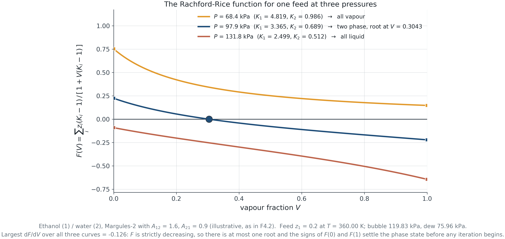
F4.10 · One feed at three pressures. The signs of F(0) and F(1) settle the phase state before any iteration begins.
4.6 · Bubble, dew and flash
Rachford-Rice was told there are two phases, and it will find two phases.
What is missing
Nothing in the equilibrium equations checks how many phases there should be. A fitted model that predicts a liquid-liquid split will still return a single perfectly reasonable-looking liquid composition inside the gap.
What answers it
The Gibbs energy of mixing and a tangent construction — not the equilibrium equations. A liquid splits when \Delta g_{\rm mix} dips below its own chord. That is Module 5, and it is why the capstone spans both modules.
PART VII
Section 4.7 The activity route runs out. The equation of state does not describe polar liquids.
A mixing rule built from G^E is the bridge — and this section reports what it is actually worth.
4.7 · Equations of state and the G^E link
Methane + n-butane at 310.93 K. Methane sits at T/T_c = 1.63: no pure liquid, so no reference fugacity to write \gamma against.
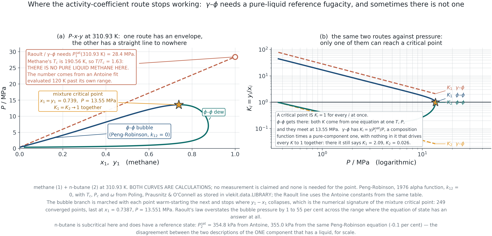
What the two routes say at the critical point
The mixture critical point is at x_1 = y_1 = 0.7387, 13.551 MPa. Phi-phi gives K_1 = 1.010, K_2 = 0.972 — going to one together, which is what a critical point is. Gamma-phi says 2.09 and 0.026, and cannot make them meet.
The fiction underneath
P_1^{\rm sat} = 28.4 MPa at 310.93 K comes from an Antoine correlation evaluated 120 K past its 91–190 K range: a number, not a vapour pressure.
F4.17 · Both curves are calculations: Peng-Robinson, 1976 \alpha, k_{12} = 0.
4.7 · Equations of state and the G^E link
Run the argument backwards. With a quadratic and b linear, the cubic already has an excess Gibbs energy — and you can write it down.
\frac{G^E_{\rm cl}}{RT} = \frac{C}{RT} \left[\frac{a_{\rm cl}(T,x)}{b_{\rm cl}(x)} - \sum_i x_i \frac{a_i}{b_i}\right] \;\xrightarrow{\;k_{12}=0\;}\; \frac{K\,x_1x_2}{x_1b_1 + x_2b_2}
It is a van Laar with no freedom
With k_{12} = 0 the bracket factorises into a perfect square, so G^E_{\rm cl} is exactly a van Laar function with A = K/b_2, B = K/b_1 — both constants fixed by the pure-component a_i and b_i. Nothing is adjustable, and K > 0, so the classical rule at k_{12}=0 can only produce positive deviations.
On a real Type 4 binary
Chloroform + 2-butanone at 303.15 K needs G^E/RT = -0.278 at equimolar. The classical rule at k_{12} = 0 offers +0.024 — the wrong sign. One fitted k_{12} = -0.072 buys -0.306, which is why it works here; but the shape stays a single skewed lobe with the skew set by b_1 : b_2 = 63.4 : 82.5 cm³/mol.
So the classical rule is not an alternative to the G^E route. It is the G^E route, with one particular and rather rigid choice of activity model.
4.7 · Equations of state and the G^E link
Stop guessing a(x). Require the equation of state to reproduce a chosen G^E — which can only be done at one reference pressure, because the equation of state’s G^E depends on P and the activity model’s does not.
\frac{a_{\rm mix}}{b_{\rm mix}} = \sum_i x_i \frac{a_i}{b_i} + \frac{G^E_\infty}{C}, \qquad b_{\rm mix} = \sum_i x_i b_i, \qquad C = \frac{\ln(\sqrt2 - 1)}{\sqrt2} = -0.6232
Why infinite pressure
There v \to b, the excess volume vanishes and the expression closes in a and b alone. MHV1 and MHV2 match at zero pressure instead — messier algebra, one large reward, on the last slide of this section.
Watch the sign
C is negative, so a positive G^E lowers a/b — the direction a positive k_{ij} moves it, which is the check that the convention is right. Some references define C with the opposite sign and then subtract. Both are in print; only one works with the value above. SRK gives C = -\ln 2.
What it costs
The reference state is not the real liquid, so published low-pressure NRTL parameters cannot be reused, and they do not transfer between SRK and PR because C differs. Unit tests: the pure limits, and G^E from the equation of state converging to the activity model as P \to \infty.
4.7 · Equations of state and the G^E link
Every cubic has a low-density expansion, and statistical mechanics fixes the composition dependence of its leading term exactly.
Z = 1 + \frac{B(T,x)}{v} + \dots, \qquad B(T,x) = b(x) - \frac{a(T,x)}{RT} = \sum_i\sum_j x_i x_j B_{ij}
Huron-Vidal violates it
It keeps b linear and puts G^E into a/b, so B inherits the composition dependence of the activity model, which is not a quadratic. Measured on the excess second virial: 2.20 % for chloroform + 2-butanone, 22.9 % for ethanol + water — ten times worse, and the violation scales with G^E.
Wong-Sandler imposes it
The quadratic form becomes a second equation, solved together with the G^E match for a and b, so b_{\rm mix} stops being linear. Its violation is 4\times10^{-11} %: machine precision, because for that rule it is an identity and not an approximation. Cost: one extra binary parameter inside B_{ij}.
The error Huron-Vidal makes is an error in a limit where the cubic ought to be exact. That is the practical form of the complaint that its parameters do not travel in temperature — and it is an argument about a region nobody measured.
4.7 · Equations of state and the G^E link
Chloroform + 2-butanone at 303.15 K: bubble pressures from the cubic alone.
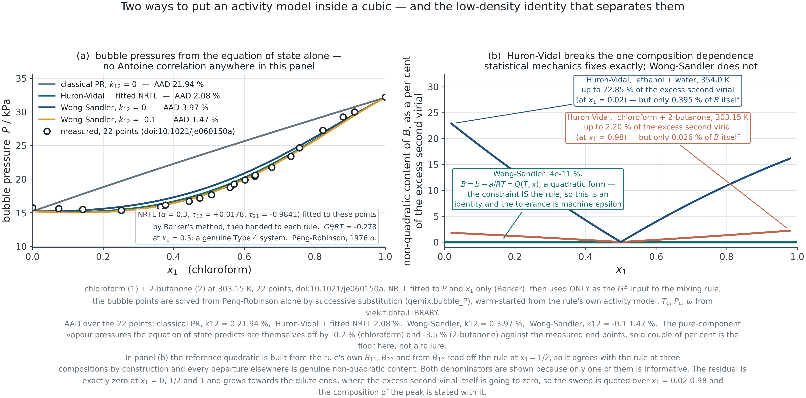
A factor of ten, for no fitted parameter
Classical Peng-Robinson at k_{12} = 0: 21.94 % AAD in bubble pressure. The same cubic with Huron-Vidal and the Section 4.5 NRTL, which never saw the equation of state: 2.08 %. Wong-Sandler 3.97 % at k_{12}=0, 1.47 % at k_{12} = -0.1.
And the number that loses
Give the classical rule its one parameter, fitted to these pressures: k_{12} = -0.072, AAD 1.34 %. It beats Huron-Vidal here — not the result the usual telling leads you to expect.
F4.18 · Peng-Robinson alone; its own pure vapour pressures are -0.2 % and -3.5 % out, so a per cent or two is the floor. doi:10.1021/je060150a
4.7 · Equations of state and the G^E link
The case for the G^E rules is not that they fit better on one binary. Two things in the table are worth more than the AAD column.
It fits comparably without being fitted here
The Huron-Vidal 2.08 % used NRTL parameters regressed in Section 4.5, which never saw the equation of state and never saw these pressures through it. The classical 1.34 % was regressed against these very pressures. Those two numbers are not the same kind of number.
And this binary is an easy case
G^E/RT = -0.28 at equimolar: moderately non-ideal, well inside what a single k_{12} can absorb. The claim for the G^E route is that it does not fall apart where the classical rule does — strongly associating mixtures, and extrapolation in temperature, which is where the second-virial violation bites.
| Route | Fitted to these pressures? | AAD in P |
|---|---|---|
| Classical PR, k_{12} = 0 | no | 21.94 % |
| Huron-Vidal + the Section 4.5 NRTL | no | 2.08 % |
| Wong-Sandler, k_{12} = 0 | no | 3.97 % |
| Wong-Sandler, k_{12} = -0.1 | one number | 1.47 % |
| Classical PR, k_{12} = -0.072 | yes | 1.34 % |
The last two claims are about conditions this dataset does not contain. Say so, and say what would test them: the same binary at a second temperature, with the classical k_{12} held at the value fitted here.
4.7 · Equations of state and the G^E link
The dropdown in a process simulator, decoded. The reference state is the thing to read off the name.
| Property method | Is | Parameters |
|---|---|---|
| PRWS, RKSWS | Wong-Sandler on PR or SRK | Refit; not the published low-pressure set |
| PRMHV2, RKSMHV2 | Modified Huron-Vidal, second order | Zero-pressure reference — published UNIFAC/UNIQUAC parameters can be reused |
| PSRK | Predictive SRK: MHV1 with UNIFAC | Predictive; no binary VLE data needed |
| PR, SRK with k_{ij} | The classical rule | One number per pair, fitted, with a range of validity like any other |
Choosing a row is choosing a reference state and a parameter obligation, not a level of sophistication. Appendix slides A.2 and A.3 carry the algebra behind the first two rows; A.4 is this table with the derivation references.
Closing
Which question you are in, and which section answers it. Every box carries its section and the figure that does the work.
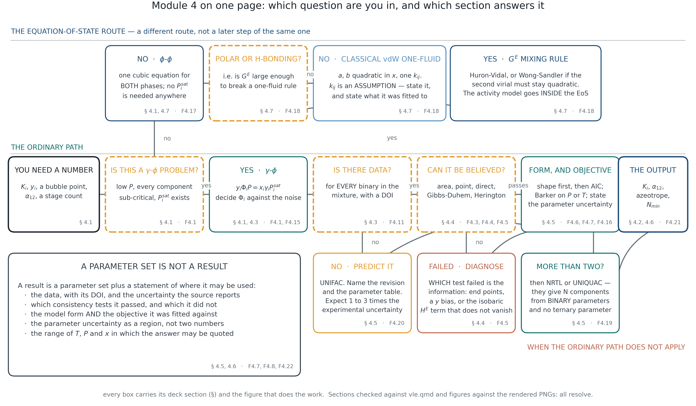
F4.22 · Checked before it was drawn: every section number and every figure tag on the map resolves against this deck and its rendered figures. There is no measured quantity on it — a number here would be a number without a citation.
Closing
The module in eight statements.
Appendix
EoS-G^E mixing rules
the derivations, in full
The algebra behind Section 4.7 — and the unit tests that settle it.
Appendix · EoS-G^E mixing rules
Equations of state
Handle high pressure and supercritical components. One model for both phases, no reference vapour pressure required. Fail on polar and hydrogen-bonding mixtures, because the quadratic mixing rule assumes random mixing.
Activity coefficient models
Handle polar and associating liquids, through local-composition terms fitted to data. Cannot cross the critical point, and need a reference fugacity that a supercritical component does not have.
The engineering problem is the mixture that is both — CO₂ with ethanol, water with a light gas — and neither description can be pushed into the other’s territory. Section 4.7 builds the bridge; the two slides that follow carry the algebra it quotes.
Appendix · the derivation behind Section 4.7
Where C comes from, in five lines. Section 4.7 quotes the result; this is the limit it is quoted from.
\frac{G^{\rm res}}{RT} = B - \frac{A}{2\sqrt2 B}\, \ln\frac{Z + (1+\sqrt2)B}{Z + (1-\sqrt2)B} + Z - 1 - \ln Z
P \to \infty:\quad Z \to B, \qquad \ln\frac{2+\sqrt2}{2-\sqrt2} = 2\ln(1+\sqrt2), \qquad \frac{G^{\rm res}}{RT} \to B + C\,\frac{a}{bRT}
Then subtract the pure components
\frac{G^E_\infty}{RT} = \frac{P}{RT}\Big(b - \textstyle\sum_i x_i b_i\Big) + C\left[\frac{a}{bRT} - \sum_i x_i \frac{a_i}{b_iRT}\right]
The first bracket is PV^E and vanishes iff b is linear in composition — exactly the assumption Huron-Vidal makes and exactly the one Wong-Sandler gives up. With it gone, a/b = \sum_i x_i a_i/b_i + G^E_\infty/C.
The sign, done slowly
C = -\ln(1+\sqrt2)/\sqrt2 = \ln(\sqrt2-1)/\sqrt2 = -0.6232 — the same number written two ways, and negative. A positive G^E therefore lowers a/b, which is the direction a positive k_{ij} moves it. Writing the rule as “-\,G^E/C” with a negative C turns every positive-deviation system into a negative-deviation one. Settle it with a numerical limit, not with a reference.
Huron, M.; Vidal, J. Fluid Phase Equilib. 3 (1979) 255-271. SRK gives C = -\ln 2; the constant depends on the volume translation of the cubic and on nothing else.
Appendix · the derivation behind Section 4.7
Two conditions, two unknowns. Then the test that makes a correct implementation look broken.
Q = \sum_i\sum_j x_i x_j \left(b - \frac{a}{RT}\right)_{ij}, \qquad D = \sum_i x_i \frac{a_i}{b_i RT} + \frac{G^E_\infty}{CRT}
b_{\rm mix} = \frac{Q}{1 - D}, \qquad a_{\rm mix} = RT\,\frac{Q\,D}{1 - D}
Why b stops being linear
Q is the imposed quadratic second virial and D carries the G^E match, so b_{\rm mix} = Q/(1-D) inherits the composition dependence of both. That is the structural difference from Huron-Vidal, and it is what buys B(T,x) = \sum_i\sum_j x_ix_jB_{ij} as an identity.
The trap
The infinite-pressure derivation matches an excess Helmholtz energy. G^E - A^E = PV^E; Huron-Vidal has V^E_\infty = 0 so the two coincide, but Wong-Sandler’s b_{\rm mix} is not linear, so its G^E from the equation of state diverges like PV^E while its A^E converges. At P = 10^{11} kPa and x_1 = 0.4: A^E/RT = -0.258836 against the activity model’s -0.258836, while G^E/RT reads -93713.
Wong, D. S. H.; Sandler, S. I. AIChE J. 38 (1992) 671-680. Pure-component reduction (b_{\rm mix} = b_i, a_{\rm mix} = a_i) is the first unit test; the A^E limit above is the second.
Appendix · the derivation behind Section 4.7
Five checks, each a limit the algebra must reproduce exactly. Every number below came out of a run, not out of a reference.
| Pure-component reduction | b_{\rm mix} = b_i and a_{\rm mix} = a_i at x_i = 1, for both rules. Catches most indexing errors immediately |
| Huron-Vidal, P \to \infty | G^E/RT from the equation of state = -0.258836 at x_1 = 0.4, against the activity model’s -0.258836. Converged by 10^{11} kPa |
| Wong-Sandler, P \to \infty | Test A^E, not G^E: -0.258836 against the same target, while G^E/RT reads -93713 and is supposed to |
| Second virial | Wong-Sandler reproduces \sum_i\sum_j x_ix_jB_{ij} to 4\times10^{-11} % of the excess; Huron-Vidal to 2.20 % and 22.9 % |
| The classical rule as a special case | Feed the equation of state’s own G^E back into either rule and the classical result returns. At k_{12} = 0 it is a van Laar: A = 0.0840, B = 0.1093 for chloroform + 2-butanone at 303.15 K |
All five are in vlekit/gemix.py and its test module. MHV1 and MHV2 (Michelsen, 1990) match at zero pressure instead and are not implemented in the course toolkit — the reason published UNIFAC parameters transfer to PSRK is the reference state, and that argument is on the taught slide.